Удивительные истории о Dota 2
Основной загадкой Доты долгое время была личность ее создателя,широко известного как IceFrog. Существовало даже предположение,что IceFrog – это аватар, под которым скрывается целая команда модмейкеров, желающих остаться анонимными, пока в 2010 не вышла статья о том, кто же на он самом деле. Его настоящее имя — Абдул Измаил. Его имя упоминается в судебных разбирательствах по делу о копирайтах между Blizzard и Valve. Истории персонажей из вселенной Дота 2 не менее драматичны. Персонаж игры Beastmaster круглый сирота. Его мать умерла при родах, а отца затоптали дикие звери. В семилетнем возрасте Beastmaster(Каррах) смог убить короля, воспользовавшись помощью животных из зверинца.Пока царила неразбериха, Каррах освободил одного из королевских оленей, и тот поклонился в ответ. А затем Каррах верхом на олене перемахнул через высокие стены дворца и ускакал из того проклятого места. Учась передвигаться по пересеченной местности, Каррах приноровился использовать два томагавка, способные проложить дорогу как сквозь лес, так и сквозь вражеский строй. Теперь повелитель зверей Каррах по прозвищу Бистмастер уже взрослый мужчина, но он ен потерял способности говорить с дикими зверьми. Сирота из королевского зверинца превратился в неукротимого воина природы. Его томагавки настигнут любого, кто встанет на его пути. Axe(Могул Хан).Чтобы вступить в армию Красного тумана, ты должен быть кузнецом, так гласит правило. Могул Хан же является великим мастером-кузнецом в своем деле. Он никогда не проигрывал, лишь однажды, когда еще не вступил в армию. Он поспорил, что сможет выковать первоклассный топор из молота, но у него ничего не вышло. Могул Хан, так же как и другие похожие на него герои – Warlock и Disraptor, принадлежат к народу Оглоди. Но эти двое пошли по другому пути, затачивая не свое оружие, а разум. С тех пор Могул Хан всегда с издёвкой говорит им, что лучше бы они выбрали топор. Раньше, когда еще Могул Хан был рядовым бугаём в армии Красного тумана, он служил вместе с Дизраптором. Они даже воевали вместе, но после Дизраптор оставил службу и покинул армию. Могул Хан же старался двигаться по карьерной лестнице. Он участвовал во всех битвах и выходил из них победителем. Каждую свою битву Могул Хан старался быть более жестоким, чем ранее. Он владел своим топором, разрубая жертвы надвое. Бывали случаи, когда он мог обезглавить своего военачальника. Могул Хану ничего это не стоило. Существует поверье, что все воины из Красного тумана не стригут волосы, так как это показывает трусость.Но Могул Хану было наплевать на это поверье. Он всегда стригся коротко и каждый раз доказывал всем, что он лучший воин в клане, который уничтожает всех врагов на своём пути. Он ничего не боялся. Жажда крови была настолько сильна, что он убивал своих соратников. Шла семилетняя война на Тысячеболотье. Во время этого Могул Хан каждый день насыщался битвой и дошел до такого, что в ночь последней битвы он стал генералом армии Красного тумана. Он получил высший титул, который назывался Axe. Он был единственный, кто остался в живых. Могул Хану плевать на то, что ни один из солдат не хочет воевать под его знаменами, ведь в битве он полагается только на себя. Персонаж Sven был назван так в честь датского киноактера и тяжелоатлета Свен-Оле Торсена.Вигильский орден рыцарей – это место, где из самых юных лет слабеньких юнцов делают сильнейших рыцарей. На протяжении многих лет дети обучаются там и живут по правилам вигильского кодекса. Любой, кто осмелится нарушить правила, будет наказан. Вигильская цитадель находилась между деревнями диких племен и темными берегами. Место, где вся растительность смертельно опасна, а мангровые заросли плотоядны, именно в этих места повстречались и полюбили друг друга сильнейший рыцарь вигильского ордена и девушка из дикого племени. Как гласил один из законов кодекса, рыцарь вигильского ордена не мог вступать ни в какие связи с любыми девушками, не относящимися к ордену. Но рыцарь нарушил этот закон и ночами встречался с девушкой. В итоге девушка забеременела. Когда жители дикого племени узнали, что девушка беременна, они изгнали ее. Нужно было искать ночлег, и девушка отправилась к темным берегам через опасные заросли, одно прикосновение которых могло убить. Когда рыцари ордена узнали, какой проступок совершил их собрат, нарушив священный кодекс вигильского ордена, он был признан изгоем и казнен перед всеми на площади, но перед этим священный рыцарь забрал с собой еще пару врагов. После его смерти меч, что считался священным, отнесли в святилище вместе с другими артефактами. В эту ночь в пещере темных берегов родился мальчик. Мама назвала его Sven. Sven рос, мама воспитывала его и рассказывала ему, какой его был отец – храбрый, сильный, а также, что он был убит своими собратьями. Все было бы хорошо, но мама Свена заболела. Долгое время он ухаживал за ней, но все равно она умерла. Похоронив мать, Sven отправился к Вигильской цитадели, решив стать новобранцем в школе. Конечно же, он не стал рассказывать, кем был его отец. Его приняли, и началось обучение. Помимо физической подготовки была и психологическая. Они жили по вигильским законам. Тринадцать лет Sven потратил на обучение в школе. Настал тот день, когда он должен был принять присягу, но он не объявился. Все кинулись его искать, но так и не нашли. Спустя некоторое время ужасная новость потрясла орден. Оказалось, что Sven проник в святилище и выкрал меч под названием Клинок Изгоя. Дело в том, что меч был сделан как раз для его отца, и Sven был единственный, кто мог с ним сражаться. Sven сильнейшим ударом разбил священный шлем, который считался непробиваемым, и сжег кодекс в священном вигильском пламени. Он скрылся и оставил рыцарей ни с чем. Свен отправился путешествовать по миру. Он не считает себя вором, он считает себя рыцарем, но не простым, а мятежным. Как только грянула новая война, Sven тут же отправился туда, чтобы показать свою истинную силу. Clockwerk(Ратлтрап). У подножья гор издавна стояла деревня, славившаяся тем, что ее умельцы делали самые лучшие часы, что были на земле. Деревня была окружена высокими горами, которые с момента ее образования защищали ее от войн и других невзгод. В центре этой деревни стояла часовая башня, в которой жили и трудились Ратлтрап и его отец. Из поколения в поколение секрет часового мастерства передавался от отца к сыну. Долгие годы отец обучал юного Ратлтрапа искусству часового дела, а тот рос и запоминал, а скорее смог превзойти своего отца в часовом деле. Многие приезжали из давних стран лишь для того, чтобы купить одно из его произведений. Он любил свою работу и много мечтал. Бывало, так замечтается о семье, красивой жене и милых детках, которым он также передаст свои знания, что совсем забывал о том, что хотел сделать. Но все его мечты рухнули из-за войны, которая налетела на деревню, словно снежная лавина, оставив после себя горы трупов и сожженные дома. Практически все мужчины, которые выжили после нападения на деревню, встали на ее защиту. Как бы там ни было, беда приходит не одна, и от нее пострадал и отец Ратлтрапа. Перед смертью он дал сыну наставление, чтобы тот уберег себя в этом страшном мире. На последнем вдохе он сказал, что теперь его ремесло это вовсе не мастерить и чинить часы, а воевать.Похоронив отца на развалинах деревни, Ратлтрап приступил к плану, который придумал уже очень давно. Его идеей было сотворить такие доспехи, в которых он был бы неуязвим. Собравшись с мыслями, он отправился на свалку за деталями. Ему нужно было не только выживать, но и нападать, быть хищником, поэтому он прикрепил пару интересных приспособлений к броне. Одной из них была шрапнель, которая разрывалась на корпусе и поражала рядом стоящих противников. Второе – это его величайшая гордость, силовые шестерни. Они позволяли поймать жертву и зажать ее внутри, откуда он не куда не сможет убежать. Третьим его изобретением была сигнальная ракета, благодаря которой он только поражал врагов, но и неплохо разведывал территорию. Ее он смастерил из обычных фейерверков, заряжающихся в ракетницу. И в конечном итоге, чтобы максимально быть мобильным и ловить загулявших врагов, он смастерил крюк с лебедкой. Он запускал его в полет прямо к жертве, а назвал его Хукшотом. Спустя неделю работы и бессонных ночей броня была готова. Немедля одев, он почувствовал силу и мощь. Он понял, что сможет отомстить за отца и деревню. Вместе с броней он не тот Ратлтрап, что был раньше. Теперь он Клокверк. Он выбрал это прозвище в память о деревне, отце и своей профессии. Но броню нужно было испытать, и он отправился на охоту. На тех, кто напал на его деревню и сжег. Это были воины из соседних королевств, которые возжелали захватить территорию силой. Они были облачены в железные доспехи и вооружены хорошим оружием.Клокверк ждал, затаившись среди веток деревьев, как вдруг услышал шаги. Увидев небольшой разведывательный отряд противника, он немедля завел свои доспехи и устремился прямо к ним, зацепившись крюком. От сильнейшего удара половина отряда отлетела и потеряла сознание. А те, кто остались, пожалели, что родились на этот свет. После стычки на этом месте остались только их трупы. Никому не удалось уйти, а их броня просто оказалась консервной банкой. Испытания прошли успешно, и Клокверк отправился в странствия на поиски других жителей деревни. Однажды, остановившись на ночлег в одной из таверн, он встретил сородича. Его звали Tinker, который шел на войну. И они отправились вместе, а по пути встретили еще одного из расы. И уже втроем они отправились на священную войну двух камней.
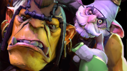

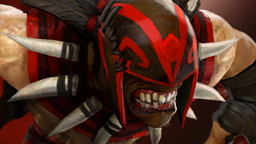
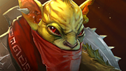
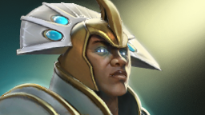
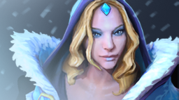
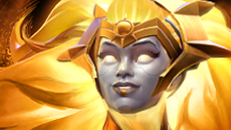

.jpeg)
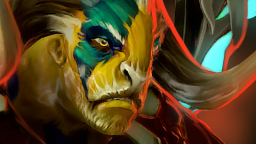
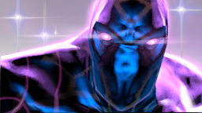
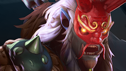
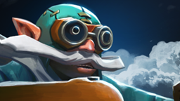
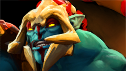

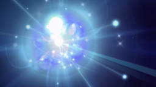
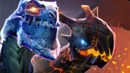
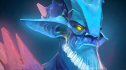
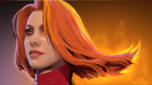
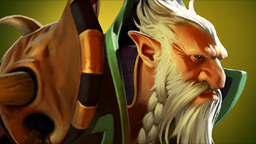
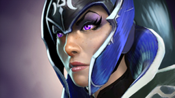
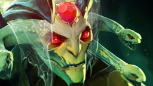
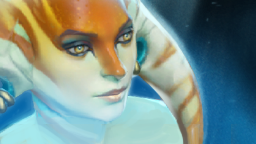
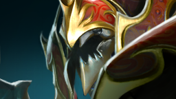
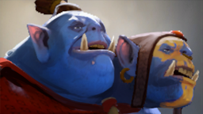
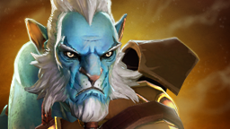
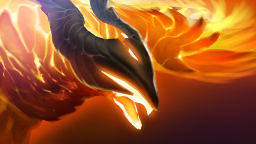
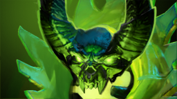
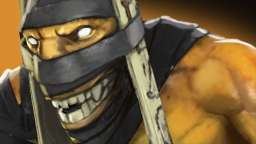
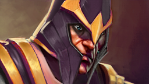
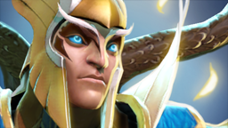
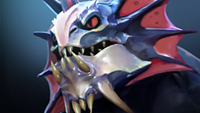
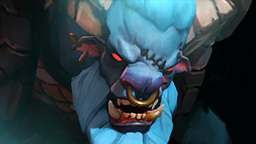
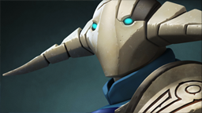
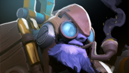
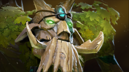
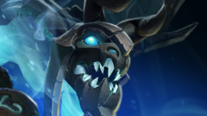
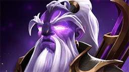
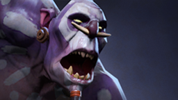
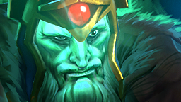
Pudge. Никто точно не знает, откуда появился Pudge на Полях Вечной Бойни, которые находятся на юго-западе от города Квойдж. Ходили слухи, что Pudge это сын известной в городе семьи мясников и что он унаследовал от отца все знания мясницкого дела, но это всего лишь слухи, которыми полнится мир. История умалчивает, что же пошло не так. Но в конечном итоге, спустя много лет он поселился в этом зловещем месте под названием Поля Вечной Бойни. Это место, где трупы не разлагаются сами по себе, поэтому им нужен тот, кто будет следить, чтобы поля были чисты, а бойня продолжалась вечно. Как и каждый мясник, Pudge имел и свои инструменты. В левой руке он держал здоровенный тесак, который с легкостью разрубал даже самые крепкие кости, а в правой у него был острый, как бритва, мясной крюк, к которому он приспособил длинную цепь. Так бы и работал Pudge, убирая и расчленяя трупы, но слишком увлекся и его работа, его призвание как будто утянули его разум за собой. Мяснику нравилось разрубать и расчленять трупы на мелкие кусочки, а иногда он пробовал их на вкус, и так увлекся, что не заметил, как в очередной раз он накинулся на труп и принялся его жрать. После этого он изменился и стал таким, каким мы привыкли его видеть сегодня. Прошло много времени с тех пор, у Паджа появились и другие увлечения. Он отрезал кусочки трупов и наращивал их себе, становясь все более огромным и источая ужасный запах гнили, который ему очень нравился. Зловоние было настолько ядовитым, что все вокруг него умирали от удушья. Когда грянула новая война, Pudge бросил свой дом и отправился туда в надежде расчленить и сожрать новую жертву, и устроить там новую бойню, которая снова и снова будет преподносить ему новые тела и новое мясо. Рошан. После того как Осколки Древних захватили власть над живущими вблизи существами и с помощью эти марионеток продолжили своё бесконечное противостояние, на поля сражения начали сбегаться легендарные герои из разных уголков мира. Тогда же и появились они – торговцы, которые предлагали и без того могущественным героям ещё более могущественные артефакты, которые помогали им в битве. Откуда эти торговцы появились, неизвестно, и кто их создатель тоже. Но одно герои знали наверняка – эти на вид слабые и беззащитные лавочники находятся под строгим надзором и защитой богов, поэтому шутки с ними плохи. Молва об этом разносилась и среди обычного народа, поэтому никто не рисковал поживиться драгоценными артефактами. Однако шли годы и то, что когда-то было неоспоримой истиной, начало потихоньку превращаться в мифы и сказки. Среди воришек всё чаще начали пробегать планы об ограблении торговцев на Битве Древних, но никто так и не осмеливался воплотить эти планы в жизнь. Вскоре всё же нашёлся смельчак, не верящий в эти небылицы про богов и проклятия и решивший немножко озолотиться. Звали этого проходимца Рошан. В одну из ночей он прокрался к лавке торговца, и пока тот спал, стащил артефакт под названием Аегис. Несмотря на то, что Рошан не верил в слухи про защиту имущества торговцев, засунув свою добычу в сумку, он осторожно встал в полный рост и всё же со страхом начал ждать, какой-то божественной кары. Прошла минута, затем другая, а потом и третья… Но ничего не произошло. Воришка ухмыльнулся и, совсем расхрабрев, полез в платку к торговцу, чтобы свиснуть и его завтрак – большой кусок свежего и вкусного сыра. Всё бы ничего, но как только Рошан собрался уходить, он почувствовал, что кто-то жёстко схватил его за руку. Повернувшись, он увидел перед собой проснувшегося торговца, который вместо того, чтобы корчить злую гримасу, просто хитро улыбался. Рошан в панике вдернул свою руку, схватил лежавший рядом с палаткой светящийся зелёный меч и ударил им купца. Тот, немного пошатнувшись, но, всё ещё улыбаясь, замертво рухнул на землю. Рошан, видя то, что он натворил, быстро помчался прочь, однако далеко ему уйти не удалось. Через несколько минут он ощутил дикую боль, которая сковала всё его тело. Рошан начал слышать разъяренные голоса, его тело начало покрываться чешуёй, а вещь, которую он украл, резко засветилась, а потом и вовсе темноту ночи рассекла ярка вспышка. Прошло буквально мгновение… Рошан открыл глаза и очутился в огромной скалистой яме. Он уже не понимал, кто он и что он, Рошан лишь попытался закричать, но вместо этого по яме разнёсся свирепый демонический рык. Его охватила бессознательная ярость, и его разум полностью затуманился. Неизвестно, сколько дней или месяцев он сидел в этой яме, но однажды к нему всё-таки зашли два знакомых героя, которых он когда-то видел в местных тавернах. По миру за это время уже успел пройти слушок, что воришка, убивший торговца, был проклят богами и заточён в глубокую яму где-то на полях сражения Битвы Древних. И каждому, что его убьёт, будет дана ценная награда. Но Рошан не помнил этих героев. В облике демона он, обезумев, ринулся в атаку, пытаясь разорвать нападающих. Через несколько минут он пал. Однако на следующий день он вновь открыл глаза и очутился в той же самой яме. Теперь Рошан живёт лишь для того, чтобы умирать, а Аегис отныне это проклятие. Герой, подобравший этот артефакт не может выкинуть его до тех пор, пока сам не умрёт. Он принимает на себя проклятие Рошана, но только на один раз. Затем Аегис снова возвращается к демону, и он перерождается для того, чтобы вновь умереть. Morphling. Тысячи световых лет огромная планета бороздила необъятные просторы космоса. Эта огромная глыба называлась Полиморфия, и почти вся состояла изо льда. Каким-то чудом она облетала солнечную систему, а ее лед не таял. Но волею судеб или силами гравитации она все-таки была притянута. Еще издавна обломки безумной луны обрушились по обе стороны мелкой речушки, и вокруг них стала развиваться цивилизация. Спустя много лет жители этих земель решили уничтожить камни друг друга и стали собирать армии. Как раз в то время две армии готовились начать битву, на которую их сподвигли эти самые камни своей огромной силой. В ночь перед самой битвой воины увидели в небе пролетающую комету, которая стремилась к земле. Генералы армий решили, что это хороший знак для начала битвы и выступили. В то время, как комета летела к земле на огромной скорости, оставляя за собой хвост, армии схлестнулись в битве на берегах узкой речушки. Через несколько минут река окрасилась в красный веет. Комета все стремилась вниз. Войдя в плотные слоя атмосферы, лед начал таять. И когда ледяная глыба обрушилась на землю, и нее вырвалось водянистое существо, которое носило имя Morphling. Увидев битву, оно тут же влилось в узкую реку. Нельзя измерить силу Морфлинга, она подобна океанской волне, которая своими накатами стирает скалы и сносит все на своем пути. Морфлинг в тот момент стал рекой, полностью слившись с ней. Первой же его жертвой стал генерал одной из армий, который осмелился вступить в реку. Как только его нога коснулась водной глади, он тут же провалился под воду, и вместо него появился Морфлинг, приняв его форму. Морфлинг так обучался, он приспосабливался к жизни на этой планете. Стояло только кому-то вступить в воду, она тут же поглощала нахала, и история повторялась. За долгую битву Морфлинг успел побывать в роли каждого. Будь то лучник или воин, либо кто-то другой. Битва на реке закончилась, но кроме Морфлинга не было выживших. После он понял, что в битве он волен сам себе, и не обязан подстраиваться под кого-то другого. Выбрав себе обличие, Морфлинг стал передвигаться в нем. После всего он выбрал сторону, за которую будет воевать. У него нет ни друзей, ни врагов, он сам по себе, он волен делать все, что хочет. Ведь он вода, а вода есть жизнь, либо смерть… Phantom Lancer(Азраф). В далеком королевстве, на самых далеких его окраинах расположилась деревня Поул. Основным родом занятий местных жителей была ловля рыбы. Весь день они охотились на нее, держа в руках гарпуны и копья, резким движением рук они протыкали ее своим оружием. А вечером собирались у костра, чтобы спокойно поесть жареной рыбки и попеть песни в кругу семьи. До жителей этой деревни доходили слухи о войне, в которую было ввязано королевство, и многие наделись, что она пройдет стороной, мимо их деревни. Но война все равно настигла их. Молодые рыбаки решили присоединиться к армии королевства, усилив её ряды, в том числе и скромный копейщик Азраф. Основным врагом королевства был ужасный маг по имени Ворн. Своими способностями он создавал сотни заколдованных воинов и отправлял их на войну. Шла долга битва, Азраф и его сородичи сражались плечом к плечу, но в конечном итоге он остался один у самого подножья крепости мага. Гнев застилал его разум, он был разъярен той бойней, в которой пали его братья. Он решил, во что бы то ни стало пробраться в крепость и убить проклятого мага. Невероятная ловкость и мастерски точные удары копья позволили ему пробраться через коридоры с ловушками, сразить зачарованную стражу, которая охраняла мага, и в конце он встретился лицом к лицу с Ворном. Маг был очень силен и выглядел ужасающе, но смелость Азрафа и его клятва, что он принесет мир в королевство и в деревню, заставляла его двигаться все быстрее и наносить удары с молниеносной скоростью и точностью. Всю ночь шла битва Азрафа и Ворна, и под самый рассвет, когда солнце осветило башню мага, Азраф пронзил копьем своего врага. Сила мага была настолько велика, что он не просто умер, а распался на тысячи кусочков света, которые пронзили копейщика своей мощью. Спустя пару секунд, когда яркий свет утих, а пыль осела, Азраф увидел своих сородичей. Они выглядели точно так же, как и он, носили ту же одежду и в руках держали копье. Азраф понял, что теперь ему под силу создавать своих фантомов, которые будут помогать ему в битвах. Но он не хотел, чтобы об этом узнали его союзники, и пожелал, чтобы фантомы пропали. Когда прибыло подкрепление в башню, они увидели Азрафа и окровавленное тело мага, но не успев приблизиться к копейщику, как тот вдруг испарился у них на глазах. После этих событий Азраф много путешествовал и участвовал в бесчисленных битвах, но на одной он задержался. Ему не нужны были никакие награды, он всего лишь хочет тихо и мирно ловить рыбу у себя в деревушке, но для этого он должен выиграть последнюю свою битву Riki– умелый воин и бесшумный убийца, который не оставляет никаких следов после исполнения заказа. Смертельные удары в спину, вот его главный конёк, и навыки ниндзя, приобретённые за годы тренировок, дали свои плоды. За годы до того, как началась Великая битва, родился ребёнок, и назвали его Рики. С этого момента и началась интересная жизнь сатира. Рики был средним сыном великой королевской династии Талин. Его старший брат, который в первую очередь должен был унаследовать трон, был им помешан. Каждый день он придумывал что-то новое, чтобы завладеть им как можно скорее. Младший же брат с самого рождения был окружён заботой и был любимчиком, его баловали, исполняли любые желания, и ему не было никакого дела до трона и всего остального. Только средний сын Рики не был ни избалованным, ни помешан троном. Его просто не замечали, ведь всё внимание уделялось двум другим. Мудрый советник царя всегда хорошо относился к Рики и изредка давал ценные советы. «Не раскрывай лицо врагу, юный принц. Пускай сомневается в том, кто вы». Чтобы хоть как-то занят принца, советник нанял для него учителя, который обучал Рики боевому искусству и скрытности. Время шло своим чередом, и нельзя было сказать, что у династии Талин дела шли хорошо. Были частые войны, но они со всем справлялись.Прекрасный сон был потревожен криками и ударами мечей. Оказалось, что на королевскую семью предательски напали. Королевская стража ничего не делала. Была убита вся семья, но только юный принц остался в живых. А всё благодаря своему искусству скрытности. Постепенно количество вражеских воинов в замке сокращалось, а всему виной незаметный Рики, который в клубах дыма всаживал клинок в горло или спину неприятелю. Но врагов было слишком много, и Рики решил отступить и вернуть свой трон тогда, когда придёт время. Надев броню королевской стражи, Рики покинул дворец.Странствуя по миру, Рики попал в Орден Bladebreaker, который отправлял своих членов убивать только тех, кто заслуживает смерти. Мастерство бесшумного убийцы росло, за плечами Рики уже были десятки убийств, и все были идеальны. Ходит слух, что Рикимару даже завладел легендарными лунными лезвиями Sange and Yasha. Они могли принимать форму, соответствующую боевому искусству их владельца. В руках Рики они становились небольшими, но хорошо сбалансированными кинжалами. Тем не менее, Рики сейчас находится там, где и должен – на Великой войне. А после того, как она закончится, он отправится возвращать свой трон. Drow Ranger. Её история началась в караване, который ездил по всему миру, торгуя или развлекая жителей городов. Её родители были частью этой вереницы, но они были обычными путешественниками, которые не искали ни обогащения, ни каких-либо могущественных артефактов. Нет ничего лучше необдуманных путешествий, ведь как говорится, если дать волю ногам, неизвестно куда тебя занесёт. Каждый великий герой, как правило, начинает свой путь с великой трагедии, Траксес не исключение. Тёмной ночью разбойники напали на караван недалеко от поселения дроу (раса низкорослых троллеподобных и далеко не располагающих внешним видом существ). Но, несмотря на их неказистость, шумное убийство невинных навлекло гнев тихого народа. Разбойники были отбиты, а большая часть каравана спасена. Большая, но были и убитые, среди которых оказались и родители будущей рейнджер. После схватки среди догорающих повозок дроу нашли маленькую девочку и решили не бросать её произвол судьбы. Так Траксес стала частью народа дроу. Шли годы, уже ребёнком юная девочка проявляла те черты, которые так ценились у дроу. Скрытность, безмолвность и хитрость. Душой, если не телом, она как будто подкидыш дроу, возвращённый в свой настоящий дом. Но, время шло, она росла всё больше и больше, возвышаясь над остальными, и чувствовала себя уродиной. Помимо всего, черты её лица были гладкими и симметричными, лишёнными бородавок и жёстких усов. Настало время, когда Траксес решила покинуть приютившее её племя. Она ушла в лес, решив избрать путь отшельницы. Ходят слухи, что и до сих пор она живёт в тех лесах, поклоняясь божественному духу совы. Возможно, это она переняла у расы дроу. Чтобы выживать, Траксес обучилась охотиться и убивать. Но нет, она не наёмник, смотрительница. Скрытая и отважная, неуловимая и меткая. Любые угрозы, исходящие от кого-либо пресекались ею в лесу, будь то отряд разбойников или, к примеру, снежный демон, спустившийся с гор, чтобы бросить вызов лучнице. Тёмная сущность была наслышана о силе и ловкости юной охотницы. Но высокомерность демона не давала ему поверить в то, что кто-либо может одолеть его. Ему пришлось проделать длинный путь, чтобы найти Траксес на своё же несчастье. Демон был перехитрён воспитанницей расы дроу и сражён. Кстати, таланту морозить свои стрелы она научилась после убийства этого демона, изучив тёмную магию падшего. Несмотря на свою силу, Drow Ranger не причиняла вреда никому из простых людей. Потерявшиеся странники, нашедшие выход из леса, иногда рассказывают о невероятно красивой стражнице, наблюдавшей за ними из гущи леса. Лучница очень сильно восхищается Сильванской гвардией. Это фракция, которая патрулирует в лесах близ земель дроу. Они вооружены луками и перемещаются незаметно. Каждый лучник гвардии изготавливает стрелы для себя лично, а Drow Ranger иногда шпионит за Сильванскими стражами и даже переодевается в доспехи, чтобы притвориться частью гвардии. Непобедимость и истинная красота воспитали в Траксес чрезмерное себялюбие. Она восхищается своими навыками и даже стилем одежды. Элегантная, ловкая и скрытная, обжигающая как лёд, она двигается, словно туман в тишине. Лишь тихий шепот вдалеке скажет, что её ледяная стрела нашла путь к чьему-то сердцу. Говоря об удивительных фактах, связанных с Дота 2, нельзя не сказать о ней, как о соревновательной дисциплине. Ставки на киберспорт, становятся все популярнее с каждым годом. Букмекерские конторы по всему миру охотно принимают ставки на Dota 2. Поставить на победу любимой команды можно на gg.bet/ru/dota2 Подогревают интерес к соревнованиям, не только ставки, но и призовые фонды турниров. Бюджет крупнейшего турнира по Dota 2 The International 2019 составил более 34 миллионов долларов США. А если говорить точнее, то $34,298,849. Не обходится без интриг и в киберспорте. Известный мем "322", ставшим нарицательным именем для всех договорных матчей в киберспорте, произошел от одного курьезного события. В 2013 году игрок коллектива RoxKis, Алексей Solo Березин поставил против своей команды 100$ по коэффициенту 3,22.